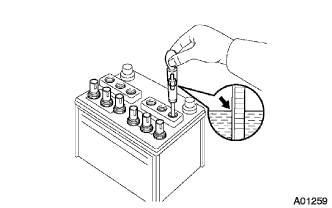
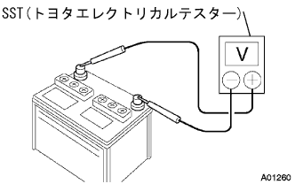
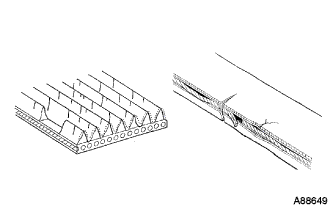
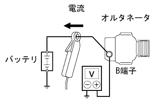
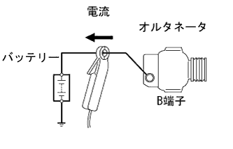

Charging (2GR-FE) Function Inspection |
| 1. Battery Fluid Level Inspection |
Inspect Fluid Level
If it is below the LOW level, replace the battery or add distilled water.
| 2. Inspect Battery Specific Gravity |
 |
Inspect the battery specific gravity of each cell.
| 3. Battery Voltage Inspection |
To remove the surface charge, within 20 seconds after stopping the engine after driving, turn the ignition switch ON and turn ON the electrical systems (headlights, blower motor, rear defogger, etc.).
Turn the ignition switch OFF and turn OFF the electrical systems.
 |
Using SST (Toyota electrical tester), measure the battery voltage between the terminals.
| Tester Connection | Condition | Standard |
|---|---|---|
| Battery positive terminal - Battery negative terminal | Fluid temperature 20°C | 12.5 to 12.9V |
| 4. Battery Terminal, Fusible Link and Fuse Inspection |
Check that the battery terminals are not loose or corroded.
Check the fusible links and fuses for continuity.
| 5. Belt Inspection |
 |
Inspect the belt for wear or cracks.
 |
Check that the belt is securely engaged in the rib grooves.
| 6. Alternator Wire Harness Inspection |
Inspect the wire harness for cracks or deterioration.
| 7. Alternator Abnormal Noise Inspection |
Check that there is no abnormal noise from the alternator while the engine is running.
| 8. Charge Warning Light Inspection |
Warm up the engine and turn the ignition switch OFF.
Turn OFF all electrical system switches.
Turn the ignition switch ON and check that the charge warning light comes on.
Start the engine and check that the light goes off.
| 9. No-load Test |
 |
Charging Circuit Inspection
Using SST (Toyota electrical tester, AC/DC probe 400A), measure the battery voltage when the engine speed is raised to 2000r/min with no load.
| Tester Connection | Condition | Standard |
|---|---|---|
| Terminal B - Body ground | 10A or less | 12.1 to 15.4V |
| 10. Load Test |
 |
Using SST (Toyota electrical tester, AC/DC probe 400A), from the no-load test condition, turn the headlights to high beam and the heater blower switch to Hi, set the engine speed to 2000r/min, and measure the current.
| Tester Connection | Condition | Standard |
|---|---|---|
| Terminal B - Battery positive terminal | Always | 30A or more |
| 11. Matrix by Problem Symptom |
Check Problem Symptom
Identify the problem symptom and inspect according to the applicable chart.
| Symptom | Proceed to |
|---|---|
| Charging malfunction (battery discharged, charge warning light on) | Go to step [*1] |
| Belt abnormal noise / excessive slip | Go to step [*2] |
| Abnormal noise from alternator | Go to step [*3] |
Alternator Pulley Lock Inspection [*1]
With the alternator installed on the vehicle, start the engine and visually check that the rotor (fan) inside the alternator is rotating.
With the alternator removed, hold the rotor (fan) inside the alternator, turn the alternator pulley in the locking direction (clockwise), and check that it does not rotate.
| Inspection Result | Proceed to |
|---|---|
| OK | Repair or replace alternator assembly |
| NG | Replace alternator pulley with clutch |
V-belt Wear Inspection [*2]
Inspect the V-belt for wear.
| Inspection Result | Proceed to |
|---|---|
| OK | Go to next step |
| NG | Replace fan and alternator V-belt |
Alternator Pulley Wear Inspection
Check that there is no abnormality in the groove shape of the alternator pulley.
| Inspection Result | Proceed to |
|---|---|
| OK | Go to next step |
| NG | Replace alternator pulley with clutch |
One-way Clutch Function Operation Inspection
With the alternator removed, hold the rotor (fan) inside the alternator and check that the alternator pulley (outer race) rotates when turned in the free-running direction (counterclockwise).
| Inspection Result | Proceed to |
|---|---|
| OK | Go to next step |
| NG | Replace alternator pulley with clutch |
Alternator Pulley Looseness Inspection
Start the engine and inspect the alternator pulley installation area for looseness.
| Inspection Result | Proceed to |
|---|---|
| OK | Inspect pulleys other than the alternator pulley |
| NG | Tighten the alternator pulley with clutch to the specified torque (111N*m{1127kgf*cm}) |
Alternator Pulley Engagement Inspection [*3]
With the alternator removed, hold the rotor (fan) inside the alternator, and check that the alternator pulley locks when turned from the free-running direction (counterclockwise) to the locking direction (clockwise).
| Inspection Result | Proceed to |
|---|---|
| OK | Go to next step |
| NG | Replace alternator pulley with clutch |
Sliding Noise Inspection During Free-running
Perform a road test and check for abnormal noise during deceleration.
| Inspection Result | Proceed to |
|---|---|
| OK | Repair or replace alternator assembly |
| NG | Replace alternator pulley with clutch |